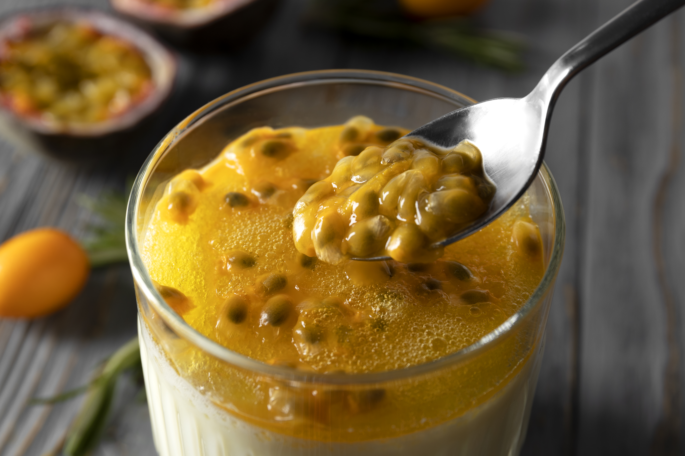

Brazilian Fruit Mousse (Maracuja)

Description
Brazilian passion fruit mousse, known as Mousse de Maracujá, is one of Brazil's most iconic and beloved desserts. Characterized by its vibrant yellow color and refreshing, tropical aroma, it offers a perfect balance of creamy sweetness and tangy tartness.
Ingredients
- 8 passion fruits
- 1 tablespoon white sugar
- 1 (14 ounce) can sweetened condensed milk
- 2 cups cream
Steps
- Break passion fruits in half, and empty contents into a bowl. Use a little water to help rinse the juice out of the skins. Mix with hands to soften pulp. Strain through a sieve or cheesecloth. Stir in sugar and sweetened condensed milk.
- In a chilled bowl, beat cream until stiff peaks form. Fold 1/3 of the cream into the passion fruit mixture, then quickly fold in remaining cream until no streaks remain. Refrigerate for 1 hour.
Home